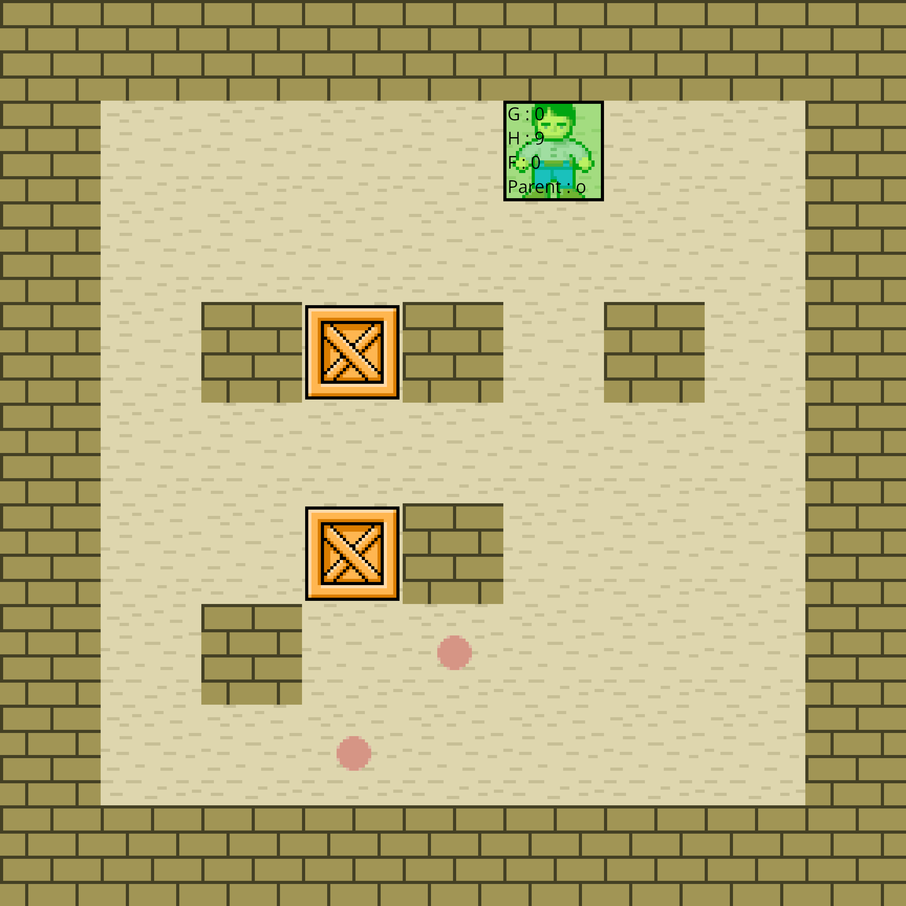
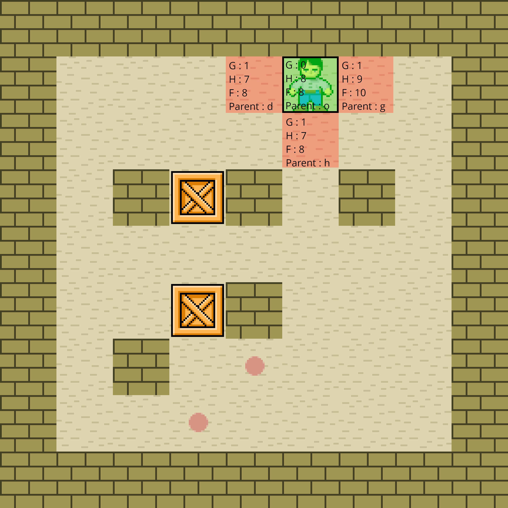
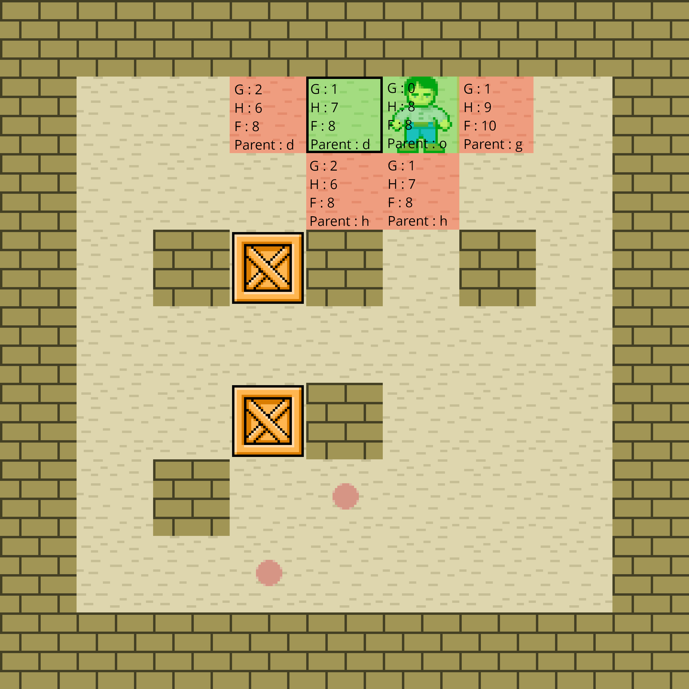
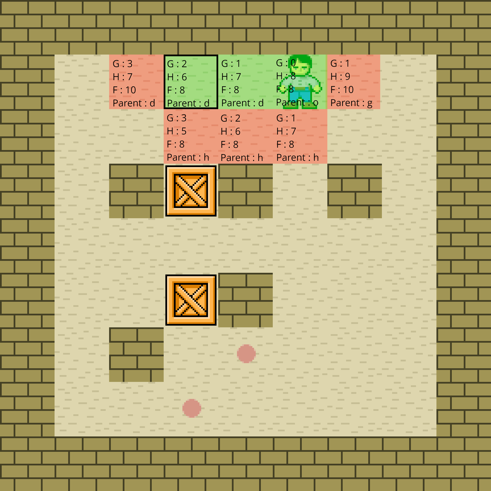
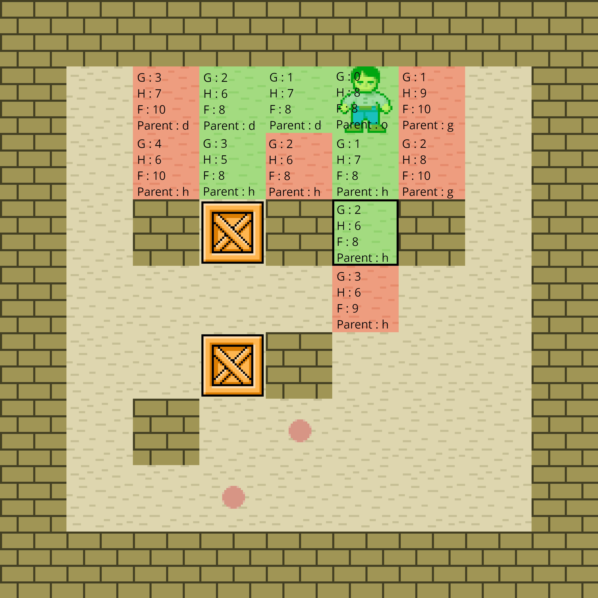
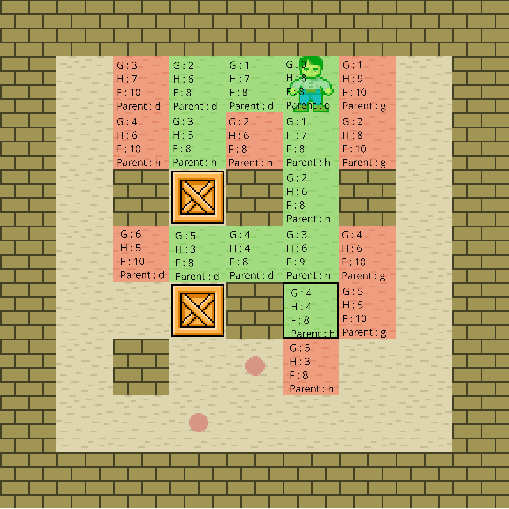

Présentation :
Notre solveur repose sur un algorithme très connu de pathfinding, l'A* (A Star). Les algorithmes de ce type là ont pour but de trouver dans un graphe, un chemin entre un noeud de départ et un noeud d'arrivé. Dans notre cas, le grahe est représenté par notre plateau de jeu où les cases sont les différents noeuds qui le composent. Chaque noeud/case possède des coordonées x et y ainsi que quatre autres voisines, elles-mêmes d'autre noeuds/cases. Contrairement à d'autres algorithmess de pathfinding tel que celui de Dijkstra, l'A* n'a pas pour but de renvoyer le meilleur chemin, mais de renvoyer un chemin optimal rapidement.
L'A* plus en détail :
L'A* est un algorithme itératif qui utilise des évaluations heuristiques. Chaque noeud possède un "poids" en fonction de sa position par rapport au point de départ et au point d'arrivé. Les noeuds possèdent trois valeurs permettant de représenter ce "poid" :
- g : représente la distance parcourue entre la case de départ et la case courante. A chaque déplacement, g augmente de 1.
- h : représente la distance de Manhatann (|x2-x1| + |y2-y1|) entre la case courante et celle d'arrivée.
- f : la somme de g et h.
Bien sûr, selon les déplacements que l'on souhaite donner au personnage, nous pouvons modifier les valeurs de g et h. Par exemple, en utilisant le théorème de Pythagore pour calculer h, l'A* privilégiera les déplacements en diagonale, tandis que la distance de Manhattan favorise les déplacements en ligne droite. Dans un A* "classique", chaque noeud possède un pointeur vers son parent, ce qui permet de reconstruire rapidement le chemin à la fin de l'algorithme. Dans notre cas, le parent d'un noeud est représenté sous la forme d'un caractère indiquant sa direction (ex. : 'h' -> le parent est en haut).
La liste ouverte et fermée :
L'A* utilise deux listes importantes : la liste ouverte et la liste fermée. La liste fermée contient les cases/noeuds déjà traités et visités, tandis que la liste ouverte contient les cases sur lequelles un déplacement est possible mais qui n'ont pas encore éé explorées. A chaque itération de l'algorithme, l'A* cherche dans la liste ouverte, la case possède ayant le plus faible f (soit la case le plus proche de de l'arrivée). Cette case est alors déplacée dans la liste fermée, et toutes ses voisines sont ajoutées à la liste ouverte.
Exemple :
Une image vaut mieux que mille mots, voici ci-dessous une explication, pas à pas, du fonctionnement de
notre algorithme A* sur un exemple.
Les cases vertes représentent celles de la liste fermée, les rouges correspondent à celles de la
liste ouverte.
Etape 0
Avant toute chose, la case de départ est ajoutée à la liste fermée. On calcul bien sur son g, h et f. Elle n'a pas de parent, donc 'o' :
Etape 1
On place ses voisines dans la liste ouverte :
Etape 2
On choisie ensuite la case de la liste ouverte ayant le plus faible f, et encore une fois, on place ses voisines dans la liste ouverte :
Etape 3
On déroule l'algorithme :
Etape 4
La prochaine case choisie dans la liste ouverte est bien celle en dessous du personnage.
C'est ici qu'on voit la vraie utilité des listes :
Etape 5
Etape 6
On continue de dérouler l'algorithme :
Etape 7
Etape 8
Etape 9
Etape 10
Encore une fois, on voit bien l'utilité des listes ici :
Etape 11
Et on continue jusqu'à atteindre la destination :
Dernière étape
Pour trouver le chemin final, on suit la direction des parents depuis la fin, et on s'arrête quand on
recontre le 'o'.
On stocke les déplacements dans une chaîne de caractères, puis on l'inverse
On a donc ici "hddhhhhh" -> "bbbbbggb".
Intégration de l'A*
Pour résoudre un plateau, nous générons au hasard des couples caisse-destination où nous appliquons l'A* pour chacun d'entre eux. Si un chemin entre une caisse et une destination est trouvé, pour chaque mouvement, nous allons appliquer à nouveau l'A*, mais cette fois ci sur le personnage pour qu'il se place au bon endroit pour être capable de pousser la caisse.